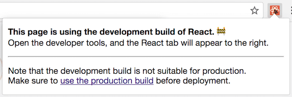

How Does the Development Mode Work?
August 4, 2019
If your JavaScript codebase is even moderately complex, you probably have a way to bundle and run different code in development and production.
Bundling and running different code in development and production is powerful. In development mode, React includes many warnings that help you find problems before they lead to bugs. However, the code necessary to detect such mistakes often increases the bundle size and makes the app run slower.
The slowdown is acceptable in development. In fact, running the code slower in development might even be beneficial because it partially compensates for the discrepancy between fast developer machines and an average consumer device.
In production we don’t want to pay any of that cost. Hence, we omit these checks in production. How does that work? Let’s take a look.
The exact way to run different code in development depends on your JavaScript build pipeline (and whether you have one). At Facebook it looks like this:
if (__DEV__) {
doSomethingDev();
} else {
doSomethingProd();
}Here, __DEV__ isn’t a real variable. It’s a constant that gets substituted when the modules are stitched together for the browser. The result looks like this:
// In development:
if (true) {
doSomethingDev(); // 👈
} else {
doSomethingProd();
}
// In production:
if (false) {
doSomethingDev();
} else {
doSomethingProd(); // 👈
}In production, you’d also run a minifier (for example, terser) on the code. Most JavaScript minifiers do a limited form of dead code elimination, such as removing if (false) branches. So in production you’d only see:
// In production (after minification):
doSomethingProd();(Note that there are significant limits on how effective dead code elimination can be with mainstream JavaScript tools, but that’s a separate topic.)
While you might not be using a __DEV__ magic constant, if you use a popular JavaScript bundler like webpack, there’s probably some other convention you can follow. For example, it’s common to express the same pattern like this:
if (process.env.NODE_ENV !== 'production') {
doSomethingDev();
} else {
doSomethingProd();
}That’s exactly the pattern used by libraries like React and Vue when you import them from npm using a bundler. (Single-file <script> tag builds offer development and production versions as separate .js and .min.js files.)
This particular convention originally comes from Node.js. In Node.js, there is a global process variable that exposes your system’s environment variables as properties on the process.env object. However, when you see this pattern in a front-end codebase, there isn’t usually any real process variable involved. 🤯
Instead, the whole process.env.NODE_ENV expression gets substituted by a string literal at the build time, just like our magic __DEV__ variable:
// In development:
if ('development' !== 'production') { // true
doSomethingDev(); // 👈
} else {
doSomethingProd();
}
// In production:
if ('production' !== 'production') { // false
doSomethingDev();
} else {
doSomethingProd(); // 👈
}Because the whole expression is constant ('production' !== 'production' is guaranteed to be false), a minifier can also remove the other branch.
// In production (after minification):
doSomethingProd();Mischief managed.
Note that this wouldn’t work with more complex expressions:
let mode = 'production';
if (mode !== 'production') {
// 🔴 not guaranteed to be eliminated
}JavaScript static analysis tools are not very smart due to the dynamic nature of the language. When they see variables like mode rather than static expressions like false or 'production' !== 'production', they often give up.
Similarly, dead code elimination in JavaScript often doesn’t work well across the module boundaries when you use the top-level import statements:
// 🔴 not guaranteed to be eliminated
import {someFunc} from 'some-module';
if (false) {
someFunc();
}So you need to write code in a very mechanical way that makes the condition definitely static, and ensure that all code you want to eliminate is inside of it.
For all of this to work, your bundler needs to do the process.env.NODE_ENV replacement, and needs to know in which mode you want to build the project in.
A few years ago, it used to be common to forget to configure the environment. You’d often see a project in development mode deployed to production.
That’s bad because it makes the website load and run slower.
In the last two years, the situation has significantly improved. For example, webpack added a simple mode option instead of manually configuring the process.env.NODE_ENV replacement. React DevTools also now displays a red icon on sites with development mode, making it easy to spot and even report.

Opinionated setups like Create React App, Next/Nuxt, Vue CLI, Gatsby, and others make it even harder to mess up by separating the development builds and production builds into two separate commands. (For example, npm start and npm run build.) Typically, only a production build can be deployed, so the developer can’t make this mistake anymore.
There is always an argument that maybe the production mode needs to be the default, and the development mode needs to be opt-in. Personally, I don’t find this argument convincing. People who benefit most from the development mode warnings are often new to the library. They wouldn’t know to turn it on, and would miss the many bugs that the warnings would have detected early.
Yes, performance issues are bad. But so is shipping broken buggy experiences to the end users. For example, the React key warning helps prevent bugs like sending a message to the wrong person or buying the wrong product. Developing with this warning disabled is a significant risk for you and your users. If it’s off by default, then by the time you find the toggle and turn it on, you’ll have too many warnings to clean up. So most people would toggle it back off. This is why it needs to be on from the start, rather than enabled later.
Finally, even if development warnings were opt-in, and developers knew to turn them on early in development, we’d just go back to the original problem. Someone would accidentally leave them on when deploying to production!
And we’re back to square one.
Personally, I believe in tools that display and use the right mode depending on whether you’re debugging or deploying. Almost every other environment (whether mobile, desktop, or server) except the web browser has had a way to load and differentiate development and production builds for decades.
Instead of libraries coming up with and relying on ad-hoc conventions, perhaps it’s time the JavaScript environments see this distinction as a first-class need.
Enough with the philosophy!
Let’s take another look at this code:
if (process.env.NODE_ENV !== 'production') {
doSomethingDev();
} else {
doSomethingProd();
}You might be wondering: if there’s no real process object in front-end code, why do libraries like React and Vue rely on it in the npm builds?
(To clarify this again: the <script> tags you can load in the browser, offered by both React and Vue, don’t rely on this. Instead you have to manually pick between the development .js and the production .min.js files. The section below is only about using React or Vue with a bundler by importing them from npm.)
Like many things in programming, this particular convention has mostly historical reasons. We are still using it because now it’s widely adopted by different tools. Switching to something else is costly and doesn’t buy much.
So what’s the history behind it?
Many years before the import and export syntax was standardized, there were several competing ways to express relationships between modules. Node.js popularized require() and module.exports, known as CommonJS.
Code published on the npm registry early on was written for Node.js. Express was (and probably still is?) the most popular server-side framework for Node.js, and it used the NODE_ENV environment variable to enable production mode. Some other npm packages adopted the same convention.
Early JavaScript bundlers like browserify wanted to make it possible to use code from npm in front-end projects. (Yes, back then almost nobody used npm for front-end! Can you imagine?) So they extended the same convention already present in the Node.js ecosystem to the front-end code.
The original “envify” transform was released in 2013. React was open sourced around that time, and npm with browserify seemed like the best solution for bundling front-end CommonJS code during that era.
React started providing npm builds (in addition to <script> tag builds) from the very beginning. As React got popular, so did the practice of writing modular JavaScript with CommonJS modules and shipping front-end code via npm.
React needed to remove development-only code in the production mode. Browserify already offered a solution to this problem, so React also adopted the convention of using process.env.NODE_ENV for its npm builds. With time, many other tools and libraries, including webpack and Vue, did the same.
By 2019, browserify has lost quite a bit of mindshare. However, replacing process.env.NODE_ENV with 'development' or 'production' during a build step is a convention that is as popular as ever.
(It would be interesting to see how adoption of ES Modules as a distribution format, rather than just the authoring format, changes the equation. Tell me on Twitter?)
One thing that might still confuse you is that in React source code on GitHub, you’ll see __DEV__ being used as a magic variable. But in the React code on npm, it uses process.env.NODE_ENV. How does that work?
Historically, we’ve used __DEV__ in the source code to match the Facebook source code. For a long time, React was directly copied into the Facebook codebase, so it needed to follow the same rules. For npm, we had a build step that literally replaced the __DEV__ checks with process.env.NODE_ENV !== 'production' right before publishing.
This was sometimes a problem. Sometimes, a code pattern relying on some Node.js convention worked well on npm, but broke Facebook, or vice versa.
Since React 16, we’ve changed the approach. Instead, we now compile a bundle for each environment (including <script> tags, npm, and the Facebook internal codebase). So even CommonJS code for npm is compiled to separate development and production bundles ahead of time.
This means that while the React source code says if (__DEV__), we actually produce two bundles for every package. One is already precompiled with __DEV__ = true and another is precompiled with __DEV__ = false. The entry point for each package on npm “decides” which one to export.
if (process.env.NODE_ENV === 'production') {
module.exports = require('./cjs/react.production.min.js');
} else {
module.exports = require('./cjs/react.development.js');
}And that’s the only place where your bundler will interpolate either 'development' or 'production' as a string, and where your minifier will get rid of the development-only require.
Both react.production.min.js and react.development.js don’t have any process.env.NODE_ENV checks anymore. This is great because when actually running on Node.js, accessing process.env is somewhat slow. Compiling bundles in both modes ahead of time also lets us optimize the file size much more consistently, regardless of which bundler or minifier you are using.
And that’s how it really works!
I wish there was a more first-class way to do it without relying on conventions, but here we are. It would be great if modes were a first-class concept in all JavaScript environments, and if there was some way for a browser to surface that some code is running in a development mode when it’s not supposed to.
On the other hand, it is fascinating how a convention in a single project can propagate through the ecosystem. EXPRESS_ENV became NODE_ENV in 2010 and spread to front-end in 2013. Maybe the solution isn’t perfect, but for each project the cost of adopting it was lower than the cost of convincing everyone else to do something different. This teaches a valuable lesson about the top-down versus bottom-up adoption. Understanding how this dynamic plays out distinguishes successful standardization attempts from failures.
Separating development and production modes is a very useful technique. I recommend using it in your libraries and the application code for the kinds of checks that are too expensive to do in production, but are valuable (and often critical!) to do in development.
As with any powerful feature, there are some ways you can misuse it. This will be the topic of my next post!